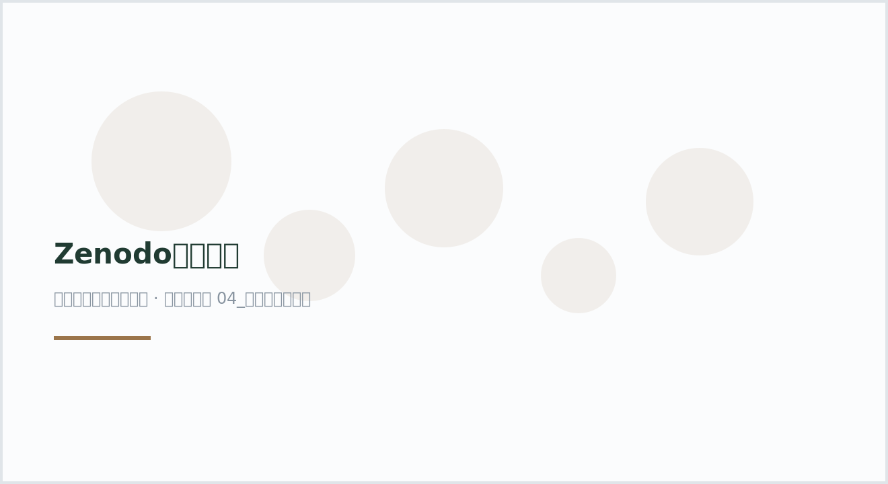

plot35 · 代码 1 · 图 0 · 笔记 1 · 代码库专题
Zenodo加速下载
代码库整理的专题，README 见原始目录。

Zenodo加速下载（自动生成占位图）

图源：（自动生成占位图）
分析代码
1 个源码文件，按目录顺序；本机绝对路径已替换为 ~。 代码可复制，但需要按自己的数据改路径与参数。
01_zenodo_fast_download.py
#!/usr/bin/env python3
"""Zenodo record 文件批量加速下载（Python + aria2c + MD5 校验）。
来源：微信公众号《【操作指南】- Zenodo数据快速下载》（河山，牛瞎哞，2026-05-07）
https://mp.weixin.qq.com/s/-FwMLJp1xpEmGHEwVWx-vw
改编：在原文示例基础上参数化为命令行脚本，保留 requests 取清单、
aria2c 断点续传和 MD5 校验的完整流程。
"""
from __future__ import annotations
import argparse
import hashlib
import subprocess
import sys
from pathlib import Path
from urllib.parse import quote
import requests
def parse_args() -> argparse.Namespace:
parser = argparse.ArgumentParser(
description="从 Zenodo 获取 record 文件清单，用 aria2c 断点续传下载并校验 MD5"
)
parser.add_argument("--record-id", required=True, help="Zenodo record ID，例如 14726428")
parser.add_argument("--out-dir", required=True, help="目标下载目录，例如 D:\\Zenodo_Download")
parser.add_argument("--target-files", nargs="*", default=[], help="只下载的文件名列表；留空则下载全部")
parser.add_argument("--connections", type=int, default=4, help="单个文件连接数，默认 4")
parser.add_argument("--parallel", type=int, default=2, help="同时下载文件数，默认 2")
parser.add_argument("--user-agent", default="Zenodo-Downloader/1.0", help="请求 User-Agent")
parser.add_argument("--skip-md5", action="store_true", help="下载后跳过 MD5 校验")
return parser.parse_args()
def fetch_record_metadata(record_id: str, user_agent: str) -> dict:
api_url = f"https://zenodo.org/api/records/{record_id}"
response = requests.get(api_url, headers={"User-Agent": user_agent}, timeout=60)
response.raise_for_status()
return response.json()
def normalize_checksum(checksum: str) -> str | None:
if not checksum:
return None
if checksum.startswith("md5:"):
return checksum.split("md5:", 1)[1]
return checksum
def build_download_url(record_id: str, filename: str) -> str:
return f"https://zenodo.org/records/{record_id}/files/{quote(filename)}?download=1"
def write_aria2_input(files: list[dict], record_id: str, url_file: Path) -> None:
with url_file.open("w", encoding="utf-8") as f:
for item in files:
name = item["key"]
f.write(build_download_url(record_id, name) + "\n")
f.write(f" out={name}\n")
def run_aria2(url_file: Path, out_dir: Path, connections: int, parallel: int) -> None:
cmd = [
"aria2c",
"-i", str(url_file),
"-d", str(out_dir),
"-c",
"-x", str(connections),
"-s", str(connections),
"-j", str(parallel),
"--max-tries=10",
"--retry-wait=20",
"--timeout=60",
"--connect-timeout=30",
"--continue=true",
"--auto-file-renaming=false",
"--allow-overwrite=true",
]
print("\n开始调用 aria2c 下载：")
print(" ".join(cmd))
subprocess.run(cmd, check=True)
def md5sum(path: Path, block_size: int = 1024 * 1024 * 8) -> str:
h = hashlib.md5()
with path.open("rb") as f:
while True:
block = f.read(block_size)
if not block:
break
h.update(block)
return h.hexdigest()
def check_files(files: list[dict], out_dir: Path) -> None:
print("\n开始 MD5 校验：")
failed: list[str] = []
skipped: list[str] = []
for item in files:
name = item["key"]
expected_md5 = normalize_checksum(item.get("checksum", ""))
local_file = out_dir / name
if not local_file.exists():
print(f"[缺失] {name}")
failed.append(name)
continue
if not expected_md5:
print(f"[跳过] {name}：Zenodo 未提供 checksum")
skipped.append(name)
continue
real_md5 = md5sum(local_file)
if real_md5.lower() == expected_md5.lower():
print(f"[通过] {name}")
else:
print(f"[失败] {name}：期望 {expected_md5}，实际 {real_md5}")
failed.append(name)
if failed:
print("\n以下文件校验失败或缺失，建议删除后重新下载：")
for name in failed:
print(" -", name)
sys.exit(1)
if not skipped:
print("\n全部文件 MD5 校验通过。")
def main() -> None:
args = parse_args()
out_dir = Path(args.out_dir)
out_dir.mkdir(parents=True, exist_ok=True)
print("正在读取 Zenodo record 元数据...")
record = fetch_record_metadata(args.record_id, args.user_agent)
all_files = record.get("files", [])
if not all_files:
sys.exit("没有读取到 files 字段，请检查 record ID 或网络连接。")
title = record.get("metadata", {}).get("title", "")
print(f"Zenodo record: {title}")
print(f"文件总数: {len(all_files)}")
if args.target_files:
target_set = set(args.target_files)
files = [f for f in all_files if f["key"] in target_set]
missing = target_set - {f["key"] for f in files}
if missing:
sys.exit(f"\n以下 TARGET_FILES 没有在 Zenodo 记录中找到：\n" + "\n".join(f" - {m}" for m in missing))
else:
files = all_files
print("\n本次将下载以下文件：")
for f in files:
size_gb = f.get("size", 0) / 1024**3
print(f" - {f['key']} ({size_gb:.2f} GB)")
url_file = out_dir / "zenodo_aria2_urls.txt"
write_aria2_input(files, args.record_id, url_file)
print(f"\n已生成 aria2 下载清单：{url_file}")
run_aria2(url_file, out_dir, args.connections, args.parallel)
if not args.skip_md5:
check_files(files, out_dir)
else:
print("已跳过 MD5 校验。")
if __name__ == "__main__":
main()